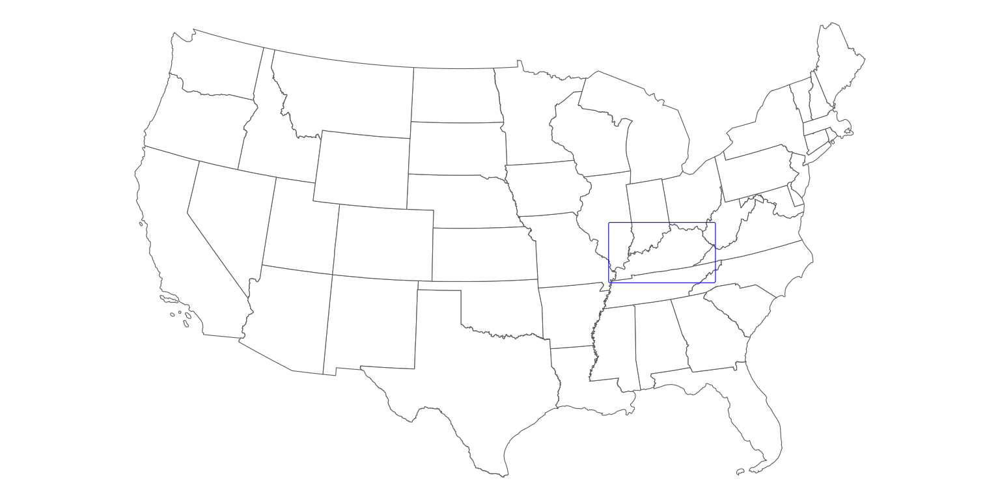

library(sf)
library(ggplot2)
library(cowplot)
library(rcartocolor)Inset maps with ggplot2
vignette
Inset maps enable multiple places to be shown in the same geographic data visualisation, as described in the Inset maps section (8.2.7) of our open source book Geocomputation with R. The topic of inset maps has gained attention and recently Enrico Spinielli asked inset maps could be created for data in unusual coordinate.
R’s flexibility allows inset maps to be created in various ways, using different approaches and packages. However, the main idea stays the same: we need to create at least two maps: a larger one, called the main map, that shows the central story and a smaller one, called the inset map, that puts the main map in context.
This blog post shows how to create inset maps with ggplot2 for visualization. The approach also uses the sf package for spatial data reading and handling, cowplot to arrange inset maps, and rcartocolor for additional color palettes. To reproduce the results on your own computer, after installing them, these packages can be attached as follows:
Basic inset map
Let’s start by creating a basic inset map.
Data preparation
The first step is to read and prepare the data we want to visualize. We use the us_states data from the spData package as the source of the inset map, and north_carolina from the sf package as the source of the main map.
library(spData)
data("us_states", package = "spData")
north_carolina = read_sf(system.file("shape/nc.shp", package = "sf"))Both objects should have the same coordinate reference system (crs). Here, we use crs = 2163, which represents the US National Atlas Equal Area projection.
us_states_2163 = st_transform(us_states, crs = 2163)
north_carolina_2163 = st_transform(north_carolina, crs = 2163)We also need to have the borders of the area we want to highlight (use in the main map). This can be done by extracting the bounding box of our north_carolina_2163 object.
north_carolina_2163_bb = st_as_sfc(st_bbox(north_carolina_2163))Maps creation
The second step is to create both inset and main maps independently. The inset map should show the context (larger area) and highlight the area of interest.
ggm1 = ggplot() +
geom_sf(data = us_states_2163, fill = "white") +
geom_sf(data = north_carolina_2163_bb, fill = NA, color = "red", size = 1.2) +
theme_void()
ggm1
The main map’s role is to tell the story. Here we show the number of births between 1974 and 1978 in the North Carolina counties (the BIR74 variable) using the Mint color palette from the rcartocolor palette. We also customize the legend position and size - this way, the legend is a part of the map, instead of being somewhere outside the map frame.
ggm2 = ggplot() +
geom_sf(data = north_carolina_2163, aes(fill = BIR74)) +
scale_fill_carto_c(palette = "Mint") +
theme_void() +
theme(legend.position = c(0.4, 0.05),
legend.direction = "horizontal",
legend.key.width = unit(10, "mm"))
ggm2
Maps joining
The final step is to join two maps. This can be done using functions from the cowplot package. We create an empty ggplot layer using ggdraw(), fill it with out main map (draw_plot(ggm2)), and add an inset map by specifing its position and size:
gg_inset_map1 = ggdraw() +
draw_plot(ggm2) +
draw_plot(ggm1, x = 0.05, y = 0.65, width = 0.3, height = 0.3)
gg_inset_map1
The final map can be saved using the ggsave() function.
ggsave(filename = "01_gg_inset_map.png",
plot = gg_inset_map1,
width = 8,
height = 4,
dpi = 150)Advanced inset map
Let’s expand the idea of the inset map in ggplot2 based on the previous example.
Data preparation
This map will use the US states borders (states()) as the source of the inset map and the Kentucky Senate legislative districts (state_legislative_districts()) as the main map.
library(tigris)
options(tigris_use_cache = TRUE)
us_states = states(cb = FALSE, class = "sf")
ky_districts = state_legislative_districts("KY", house = "upper",
cb = FALSE, class = "sf")The states() function, in addition to the 50 states, also returns the District of Columbia, Puerto Rico, American Samoa, the Commonwealth of the Northern Mariana Islands, Guam, and the US Virgin Islands. For our purpose, we are interested in the continental 48 states and the District of Columbia only; therefore, we remove the rest of the divisions using subset().
us_states = subset(us_states,
!NAME %in% c(
"United States Virgin Islands",
"Commonwealth of the Northern Mariana Islands",
"Guam",
"American Samoa",
"Puerto Rico",
"Alaska",
"Hawaii"
))The same as in the example above, we transform both objects to have the same projection.
ky_districts_2163 = st_transform(ky_districts, crs = 2163)
us_states_2163 = st_transform(us_states, crs = 2163)We also extract the bounding box of the main object here. However, instead of using it directly, we add a buffer of 10,000 meters around it. This output will be handy in both inset and main maps.
ky_districts_2163_bb = st_as_sfc(st_bbox(ky_districts_2163))
ky_districts_2163_bb = st_buffer(ky_districts_2163_bb, dist = 10000)The ky_districts_2163 object does not have any interesting variables to visualize, so we create some random values here. However, we could also join the districts’ data with another dataset in this step.
ky_districts_2163$values = runif(nrow(ky_districts_2163))Map creation
The inset map should be as clear and simple as possible.
ggm3 = ggplot() +
geom_sf(data = us_states_2163, fill = "white", size = 0.2) +
geom_sf(data = ky_districts_2163_bb, fill = NA, color = "blue", size = 1.2) +
theme_void()
ggm3
On the other hand, the main map looks better when we provide some additional context to our data. One of the ways to achieve it is to add the borders of the neighboring states.
Importantly, we also need to limit the extent of our main map to the range of the frame in the inset map. This can be done with the coord_sf() function.
ggm4 = ggplot() +
geom_sf(data = us_states_2163, fill = "#F5F5DC") +
geom_sf(data = ky_districts_2163, aes(fill = values)) +
scale_fill_carto_c(palette = "Sunset") +
theme_void() +
theme(legend.position = c(0.5, 0.07),
legend.direction = "horizontal",
legend.key.width = unit(10, "mm"),
plot.background = element_rect(fill = "#BFD5E3")) +
coord_sf(xlim = st_bbox(ky_districts_2163_bb)[c(1, 3)],
ylim = st_bbox(ky_districts_2163_bb)[c(2, 4)])
ggm4
Finally, we draw two maps together, trying to find the best location and size for the inset map.
gg_inset_map2 = ggdraw() +
draw_plot(ggm4) +
draw_plot(ggm3, x = 0.02, y = 0.65, width = 0.35, height = 0.35)
gg_inset_map2
The final map can be saved using the ggsave() function.
ggsave(filename = "02_gg_inset_map.png",
plot = gg_inset_map2,
width = 7.05,
height = 4,
dpi = 150)Summary
The above examples can be adjusted to any spatial data and location. It is also possible to put more context on the map, including adding main cities’ names, neighboring states’ names, and annotations (using geom_text(), geom_label()). The main map can also be enhanced with the north arrow and scale bar using the ggsn package.
As always with R, there are many possible options to create inset maps. You can find two examples of inset maps created using the tmap package in the Geocomputation with R book. The second example is a classic map of the United States, which consists of the contiguous United States, Hawaii, and Alaska. However, Hawaii and Alaska are displayed at different geographic scales than the main map there. This problem can also be solved in R, which you can see in the Making maps of the USA with R: alternative layout blogpost and the Alternative layout for maps of the United States repository.
The presented approaches also apply to other areas. For example, you can find three ways on how to create an inset map of Spain in the Alternative layout for maps of Spain repository. Other examples of inset maps with ggplot2 can be found in the Inset Maps vignette by Ryan Peek and the blog post Drawing beautiful maps programmatically with R, sf and ggplot2 by Mel Moreno and Mathieu Basille.
The decision which option to use depends on the expected map type preferred R packages, etc. Try different approaches on your own data and decide what works best for you!
Reuse
Citation
BibTeX citation:
@online{nowosad2019,
author = {Nowosad, Jakub},
title = {Inset Maps with Ggplot2},
date = {2019-12-08},
url = {https://geocompx.org//post/2019/ggplot2-inset-maps},
langid = {en}
}
For attribution, please cite this work as:
Nowosad, Jakub. 2019. “Inset Maps with Ggplot2.” December
8, 2019. https://geocompx.org//post/2019/ggplot2-inset-maps.